This classic North Cascades route is a demanding 12-mile round trip
with about 4,000 feet of elevation gain. From Cascade Pass, the
trail climbs through wildflower meadows and across talus slopes to
Sahale Glacier Camp. Along the way, you’ll traverse alpine ridges,
pass turquoise lakes, and take in sweeping views of peaks like
Forbidden, Boston, and Eldorado.
Even the parking lot offers a stunning view.
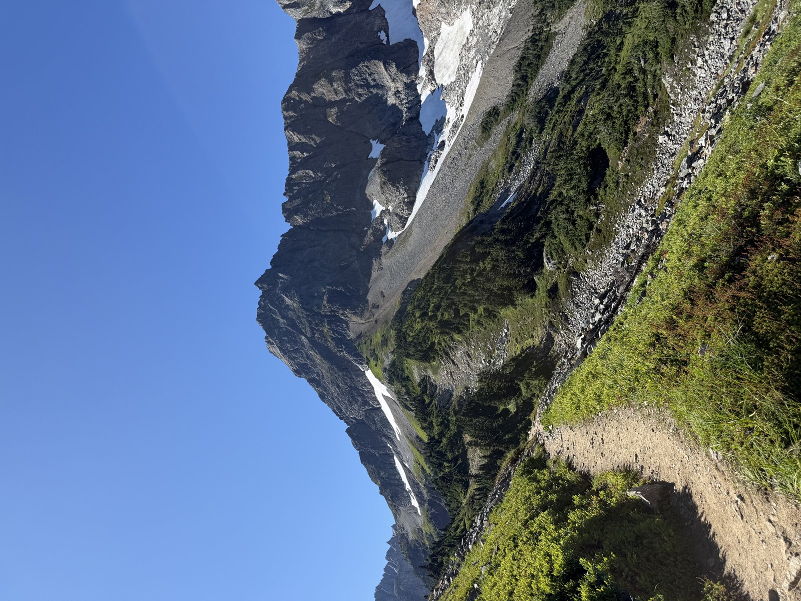
Starting out on the Cascade Pass Trail.
Summer in the Cascades is nothing short of spectacular.
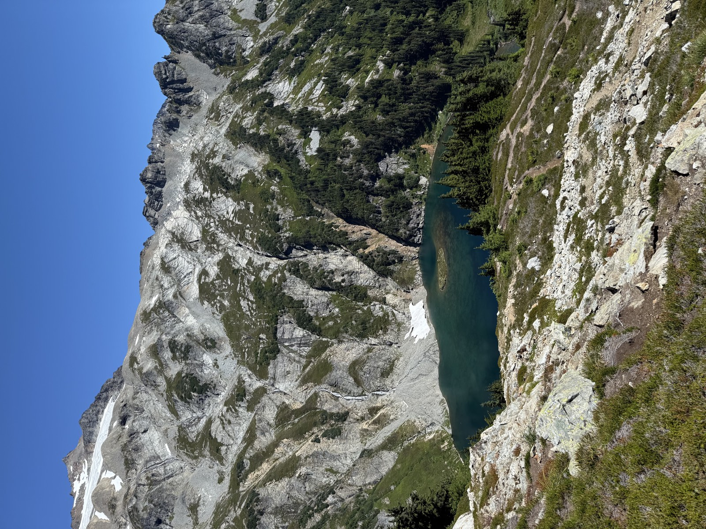
Doubtful Lake glows a brilliant turquoise.
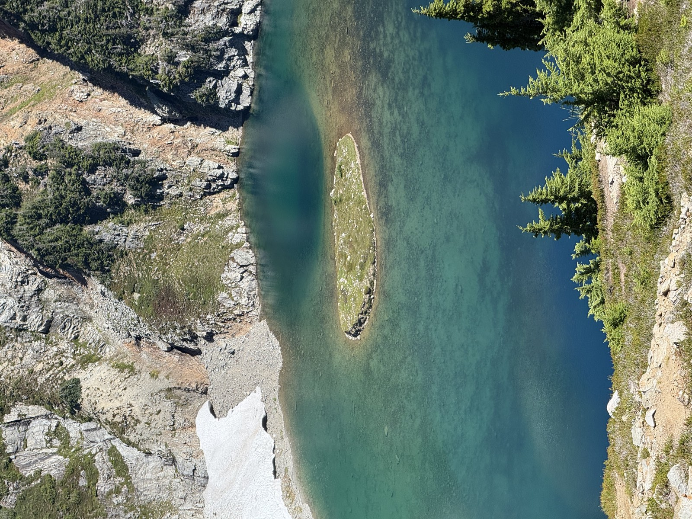
The calm, clear water is mesmerizing.
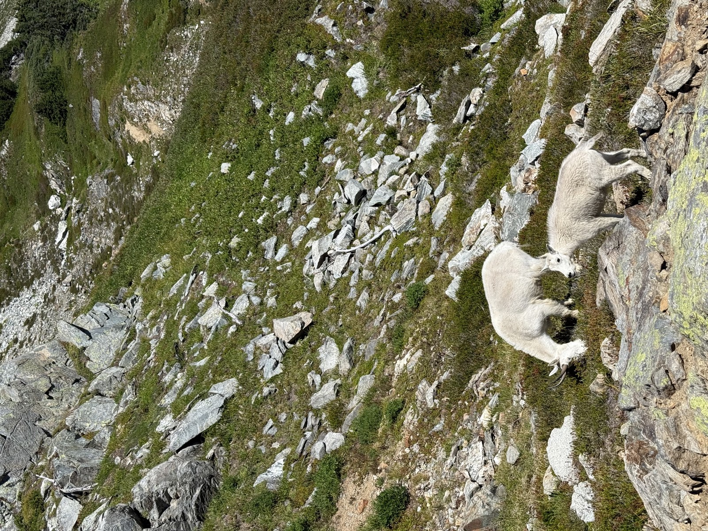
Mountain goats grazing along the trail.
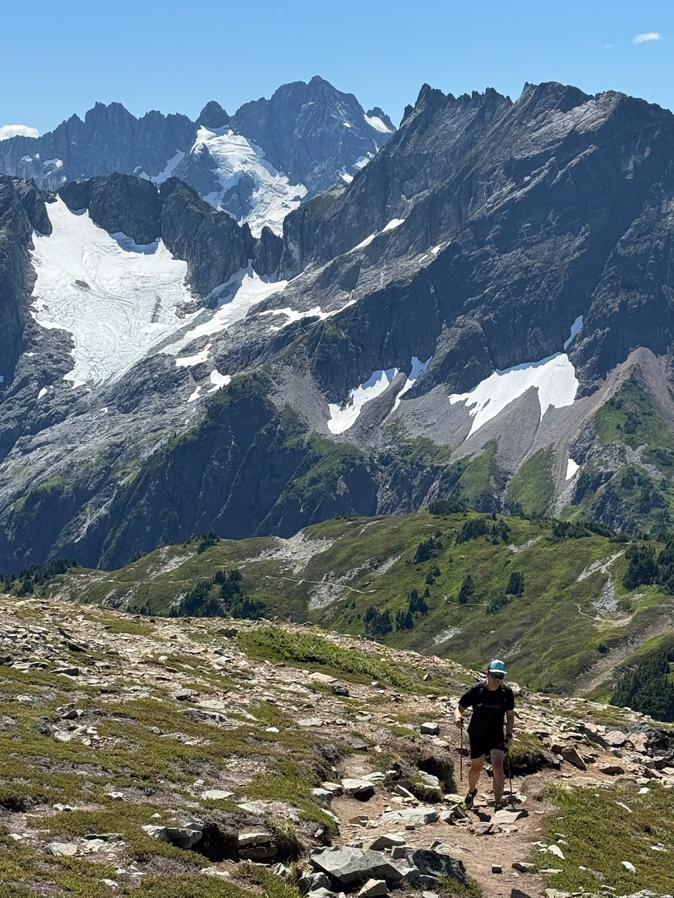
Up, up, and away.
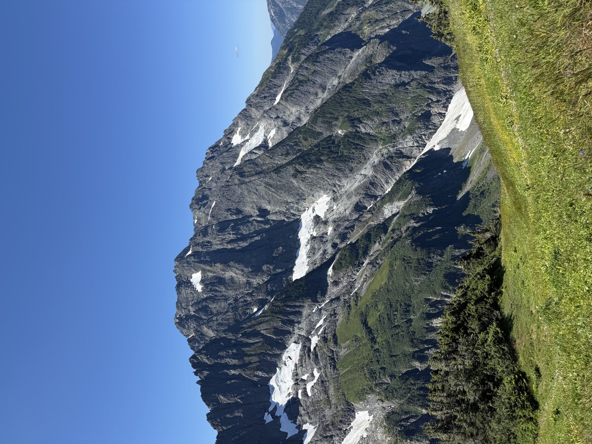
360-degree vistas at every turn.
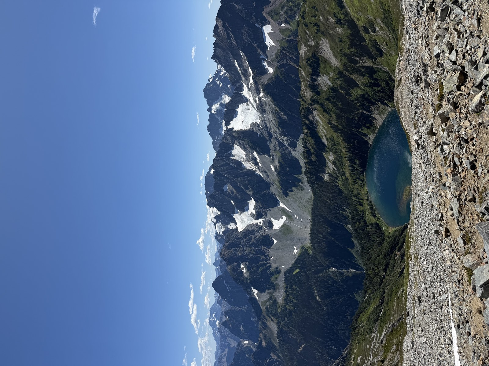
Doubtful Lake framed by the rugged Cascades.
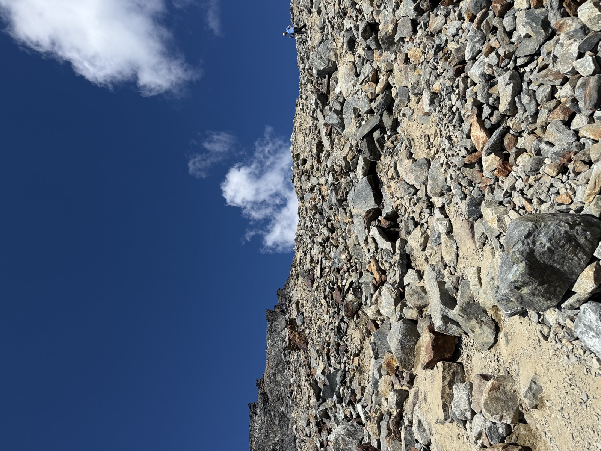
Steep, loose scree on the final ascent.
I made it to Sahale Glacier Camp.
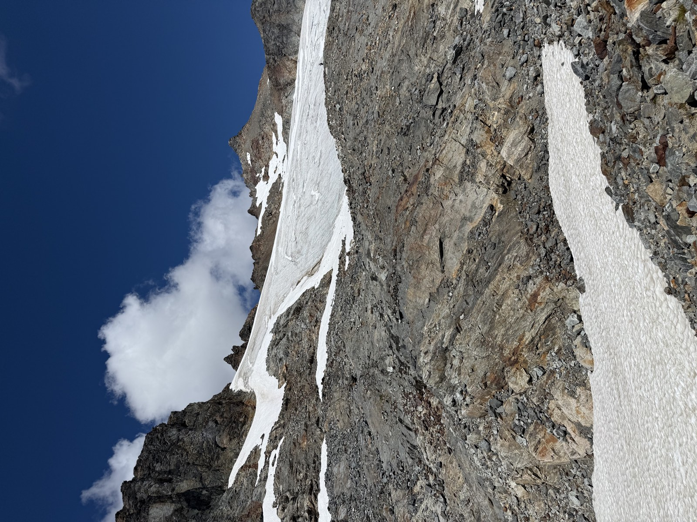
A brilliant view of Sahale Glacier.
Filtering ice-cold glacier melt for drinking water.
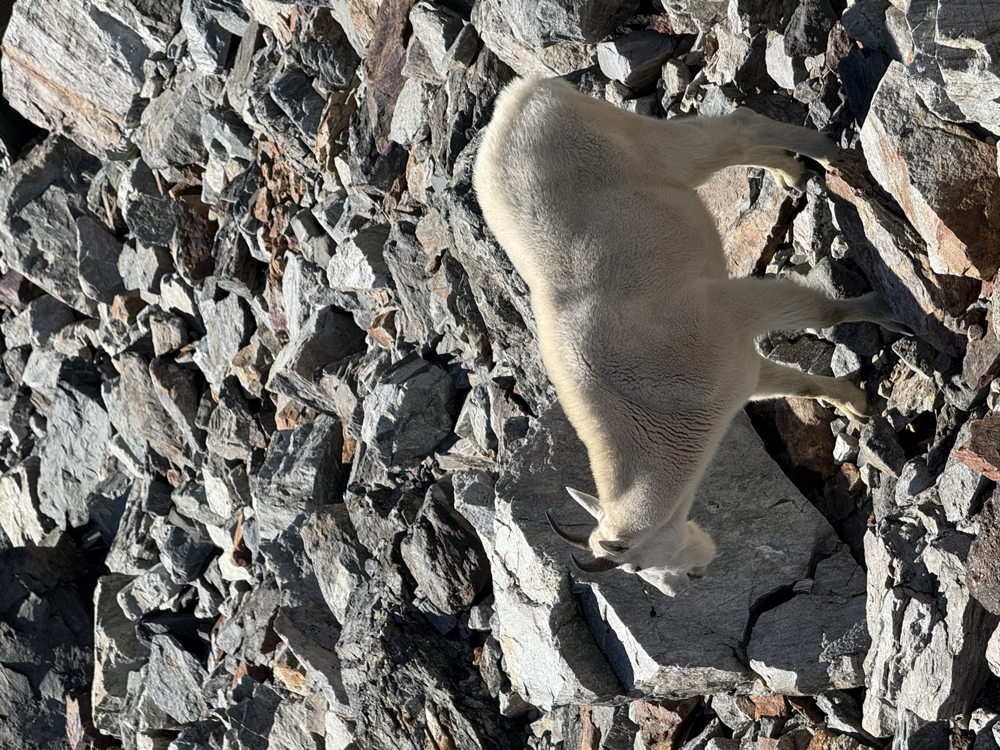
Another mountain goat on the descent.
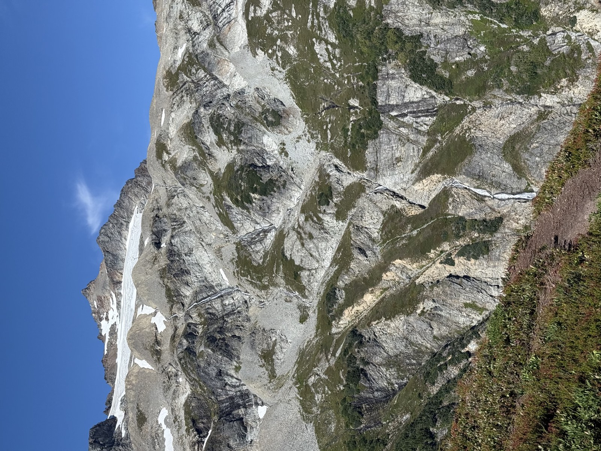
A waterfall plunging from Sahale Glacier to Doubtful Lake.